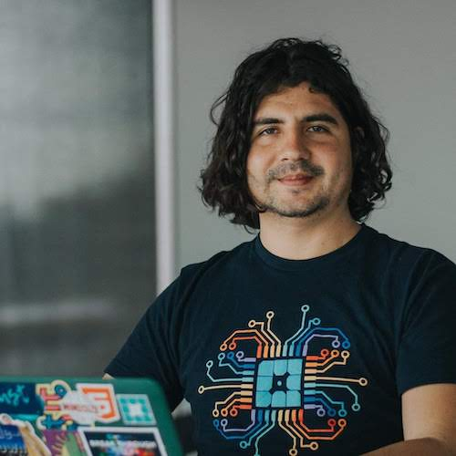

About Me
Soon after I started building websites as a hobby, I realized I wanted to make it a career.
I started with HTML, CSS, JavaScript and Adobe CC. A little after that, I discovered WordPress, which I immediately fell in love with. I am also comfortable with PHP, MySQL and the Linux kernel.
I am attending the Coding Bootcamp at UT Austin to expand my skills and finally becode a front-end developer.
My passion for music has led me to play bass in a band. We are in the process making our first set of tracks, which I will share as soon as we do.
Please feel free to reach out to me via email or social media to collaborate on a project.